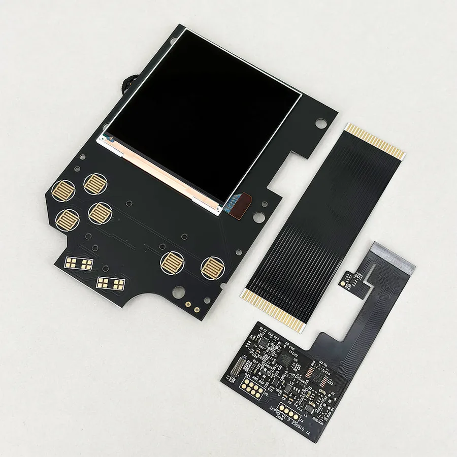
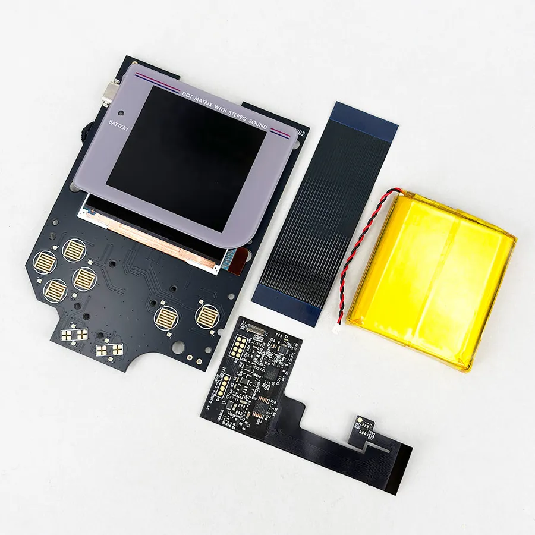
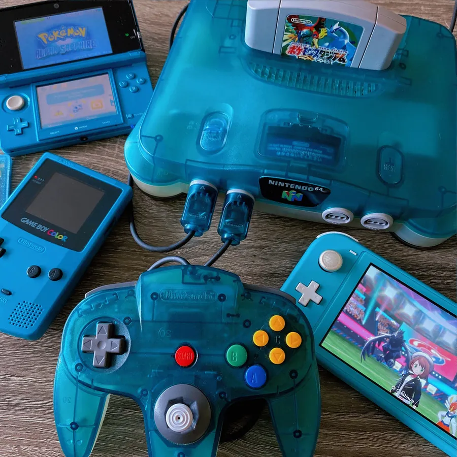
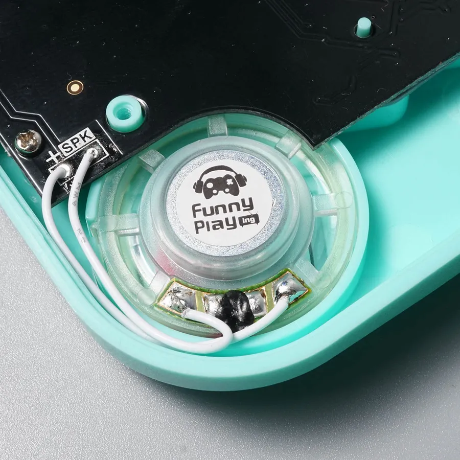

Home ›
Wiki ›
Game Boy DMG
The Game Boy DMG-001 (1989) is the most documented modding platform in the world. Roomy shell, simple electronics and a huge community: it's the ideal console for a first project as well as a high-end custom. Here are the go-to mods, sorted by category.
📺 Display ⚡ Power & Performance 🔊 Lighting & Audio 🔘 Buttons
The most transformative mod: replacing the original reflective panel with a backlit IPS screen. Almost every IPS kit needs clean power (see CleanPower under Power).
Popular

© FunnyPlaying FunnyPlaying
RetroPixel IPS Q5 Kit
A giant IPS panel for absolute clarity and customizable color palettes.
Panel ~11% larger than stock Adjustable brightness (contrast wheel) OSD: 15 brightness levels, 36 palettes, 4 pixel effects Nearly solder-free (except the speaker)
Type IPS Q5
Size +11% vs stock
OSD Yes (15/36/4) ⚠ Prerequisites : CleanPower recommended (stable power)
Strengths Crystal-clear image Bright backlight Color palettes Beginner-friendly install Trade-offs Higher battery drain CleanPower strongly recommended Sources : FunnyPlaying — DMG RetroPixel IPS Q5 · Handheld Legend — Retro Pixel Q5
Laminated

© FunnyPlaying FunnyPlaying
RetroPixel IPS Laminated Kit
The laminated version of the RetroPixel: zero dust under the glass and an even sharper image.
Glass laminated to the panel Zero stray reflections Customizable color palettes
Type Laminated IPS Q5
OSD Yes ⚠ Prerequisites : CleanPower recommended
Strengths Superior contrast and sharpness No trapped dust Factory look Trade-offs Pricier than the non-laminated version CleanPower recommended Sources : FunnyPlaying — DMG RetroPixel IPS Laminated Q5
⚑ under review
📷
Hispeedido
V4 Q5 IPS LCD (OSD)
IPS kit with a full OSD menu to adjust brightness, colors and pixel effects on the fly.
Built-in OSD menu Scanline effects Multi-level brightness
Type IPS Q5
OSD Yes ⚠ Prerequisites : CleanPower recommended
Strengths Rich OSD Good value for money Trade-offs Sometimes sparse instructions CleanPower recommended
New ⚑ under review
📷
Hispeedido
V5 Ultra IPS LCD (OSD)
The upgraded version with maximum brightness and extra display modes.
Ultra-high brightness Advanced OSD Extra display modes
Type IPS Ultra
OSD Yes (advanced) ⚠ Prerequisites : CleanPower recommended
Trade-offs Higher power draw CleanPower recommended
Ditch the 4 AA batteries for a rechargeable USB-C battery, stabilize power for an IPS screen, or overclock the console.
⚑ under review
© RetroSix RetroSix
CleanJuice Original (2500mAh)
No more 4 AA batteries. Switch to a 2500mAh rechargeable USB-C battery.
USB-C charging No-trim installation Long battery life
Capacity 2500 mAh
Charging USB-C Strengths No more batteries to buy Modern USB-C Installs without modifying the shell
⚑ under review
© RetroSix RetroSix
CleanJuice XL (3000mAh)
The high-capacity version of the CleanJuice for maximum battery life.
3000 mAh capacity USB-C charging Same form factor as the original
Capacity 3000 mAh
Charging USB-C Strengths Maximum battery life USB-C
Essential ⚑ under review
© RetroSix RetroSix
CleanPower v2.0
Replace the stock voltage regulator for clean, stable power, essential with an IPS mod.
Stable 5V power Prevents random reboots Compatible with all IPS kits
Output Stable 5V Strengths Eliminates dropouts with an IPS screen Clean voltage Low price
Speed ⚑ under review
📷
Division 6
GBAccelerator (Overclock)
Boost your games' speed (x1.5, x1.75, x2) to speed up farming or slow dialogue.
4 speed modes Button control LED speed indicator
Modes x1 / x1.5 / x1.75 / x2 Strengths Speeds up slow games Reversible Fun Trade-offs Soldering required Some games may glitch when overclocked
Light up the buttons in RGB and improve the often-weak stock sound.
RGB ⚑ under review

© Handheld Legend Handheld Legend
RetroGlow DMG
The most advanced RGB LED kit to light up your buttons in style.
Fully customizable Animation modes Button-combo control
Type RGB LED Strengths Spectacular visual effect Customizable Trade-offs Fine soldering Extra power draw
RGB ⚑ under review
📷
NatalieTheNerd
ARC DMG (RGB LEDs)
NatalieTheNerd's original LED kit. 11 colors to choose from with animation modes.
11 colors available Very low power draw 4 brightness levels
Colors 11
Brightness 4 levels Strengths Low power draw Fine adjustments Designed by a respected modder
⚑ under review
© RetroSix RetroSix
CleanAmp DMG
Boost your Game Boy's volume with this high-performance amplifier.
Clear, powerful sound 2W speaker included Active noise filtering
Power 2W Strengths Much higher volume Cleaner sound

© FunnyPlaying FunnyPlaying
Clear DMG Speaker
High-quality replacement speaker to restore clear, loud sound.
Crystal-clear sound Direct fit Original form factor
Format Stock DMG Strengths Direct replacement Improves a worn speaker Trade-offs Limited gain without an amp
General sources : Game Boy Modding Wiki — Backlight Mods